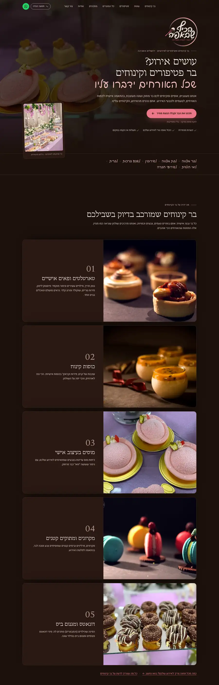
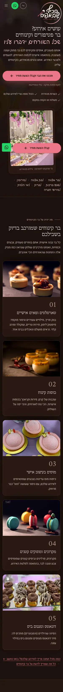

כפתור פנייה תמיד במרחק לחיצה
הכיף שבאפיה
קייטרינג בוטיק ובר פטיפורים בירושלים והסביבה
האתר הקודם נבנה באלמנטור ונטען לאט בטלפון. בניתי אתר חדש בלי אלמנטור, עם קטלוג מוצרים ומתכנן בר קינוחים ששולח את ההזמנה ישר לעסק.
- 30 עמודים: קטלוג, 4 קטגוריות, 19 מוצרים, אודות ויצירת קשר
- מתכנן בר: בוחרים סוג אירוע ומספר אורחים ומקבלים הרכב מומלץ
- מתכונים עם מסך הוספה פשוט, כך שמוסיפים מתכון בלי עזרה
- אותן כתובות עמודים כמו באתר הישן, כדי לשמור על הדירוג בגוגל